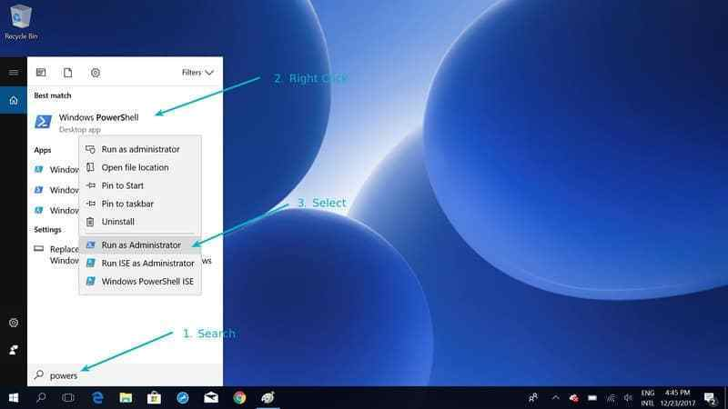
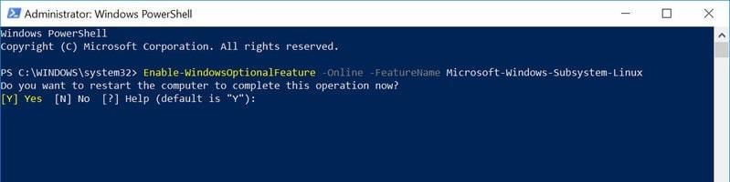
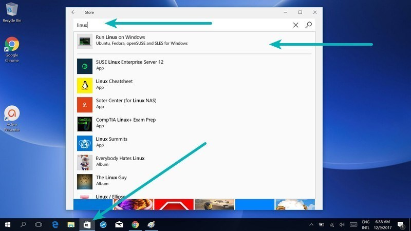
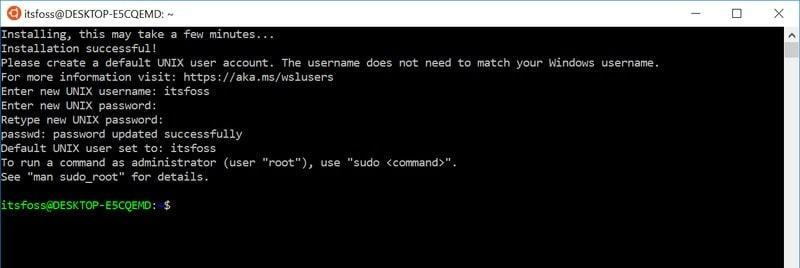
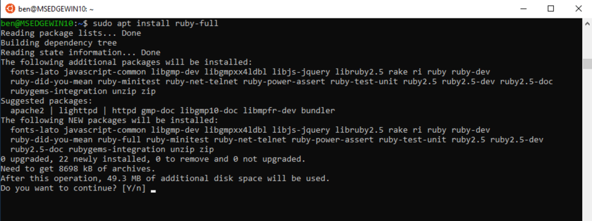
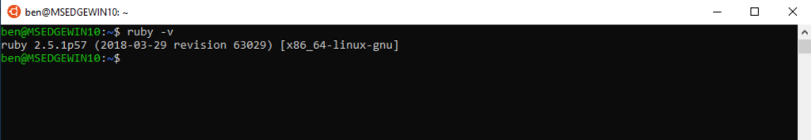
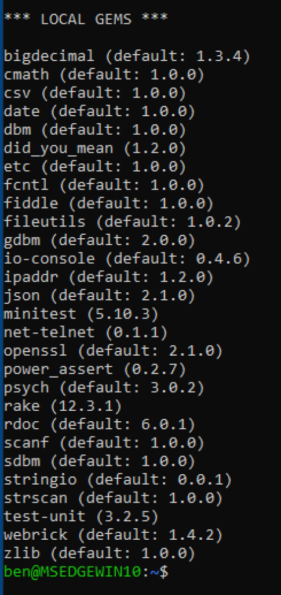
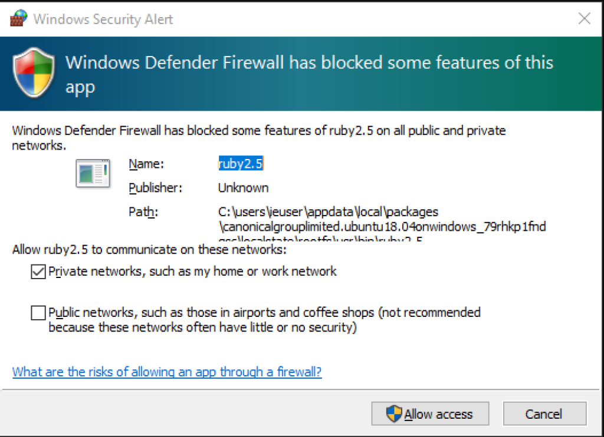

Terminal
How to Install Linux Bash Shell on Windows 10 (WSL)
Enable “Windows Subsystem for Linux” feature
The first thing you need to do is to enable Windows Subsyetm for Linux feature from PowerShell.
Go to the Start menu and search for PowerShell. Run it as administrator:

Once you have the PowerShell running, use the command below to enable Bash in Windows 10.
Enable-WindowsOptionalFeature -Online -FeatureName Microsoft-Windows-Subsystem-Linux
You’ll be asked to confirm your choice. Type Y or press enter:

Now you should be asked to reboot. Even if you are not asked to, you must restart your system.
Download a Linux system from the Windows store
Once your system has rebooted, go to the Windows Store and search for “Linux.”

You’ll see the option to install Ubuntu or SUSE. Install Ubuntu for Bash on Windows.
Once you choose the distribution of your choice, you’ll see the option to install it. Do note that it will download files of around 1Gb in size. So you should have a good internet connection here.
Run Linux inside Windows 10
You are almost there. Once you have installed Linux, it’s time to see how to access Bash in Windows 10.
Just search for the Linux distribution you installed in the previous step. In my case it was Ubuntu. You’ll see that it runs like a normal Windows application.
It will take some time installing and then you’ll have to set up the username and password.

Updating Default Software
You will need to run a quick couple commands in order to run updates software updater. The Ubuntu OS is shipped with a ton of built-in software like Git and other APT libraries, but those libraries may have had more recent updates come out since the OS was shipped. Updating this now is quick and will help you stay current and protected.
Type sudo apt-get update.
Once that is complete, type sudo apt-get upgrade. Press y when prompted.
Once that is done, type sudo apt autoremove. This will remove any packages that are no longer needed.
Terminal & Linux Packages
Python
There is a very good chance your Linux distribution has Python installed already, but it probably won’t be the latest version, and it may be Python 2 instead of Python 3.
To find out what version(s) you have, open a terminal window and try the following commands:
python --version python2 --version python3 --version
One or more of these commands should respond with a version, as below:
$ python3 --version Python 3.6.5
If the version shown is Python 2.x.x or a version of Python 3 that is not the latest (3.6.5 as of this writing), then you will want to install the latest version. The procedure for doing this will depend on the Linux distribution you are running.
Depending on the version of the Ubuntu distribution you run, the Python install instructions vary. You can determine your local Ubuntu version by running the following command:
$ lsb_release -a No LSB modules are available. Distributor ID: Ubuntu Description: Ubuntu 16.04.4 LTS Release: 16.04 Codename: xenial
Depending on the version number you see under Release in the console output, follow the instructions below:
-
Ubuntu 17.10, Ubuntu 18.04 (and above) come with Python 3.6 by default. You should be able to invoke it with the command
python3. -
Ubuntu 16.10 and 17.04 do not come with Python 3.6 by default, but it is in the Universe repository. You should be able to install it with the following commands:
$ sudo apt-get update $ sudo apt-get install python3.6
You can then invoke it with the command python3.6.
Ruby
The easiest way to install Ruby on Ubuntu is with a package manager. And for Ubuntu, that means “apt.” You need to be an administrator—or as it’s called in the Unix world, a “superuser”— to install packages. The way to run a command as the superuser is by putting the command “sudo” (“SUperuser DO”) before it.
Before we tackle installing Ruby though, let’s make sure our new Ubuntu install is up to date. Run the following in your Bash terminal:
sudo apt update && sudo apt dist-upgrade && sudo apt autoremove && sudo apt clean
This will fetch a bunch of packages and then ask you to make sure you want to install them. You can just hit enter to say yes. Then comes more waiting! It’s likely that you will have dozens of updates to install.
Once that’s done, you may get another question asking you if you want to remove some packages. Go ahead and hit “Enter” to say yes.
Once you have your prompt back, you’re ready to install Ruby! Do that with this simple command:
sudo apt install ruby-full
This does some dependency-checking and shows you what you need to install to get Ruby working:

As always, hit “Enter” to accept, and away we go. There sure is a lot of waiting involved in installing software, isn’t there? But once apt has done its magic, we’ll have a working Ruby 2.5.1 install in our Linux Subsystem. As with RubyInstaller, you can verify the Ruby install by running “ruby -v”:

And you can check the RubyGems installed with “gem list”:

Let’s go a bit further with our WSL Ruby install and see what it takes to get Ruby on Rails set up. This Ubuntu install doesn’t yet have the ability to compile gems, and Rails will need that. In particular, Rails wants to use the Nokogiri gem for parsing HTML, and that requires compiling its native extensions. The Nokogiri installation page gives us a list of apt packages to install to prepare for Nokogiri: “build-essential, patch, ruby-dev, zlib1g-dev, and liblzma-dev.”
However, we’re also going to have the same problem with needing SQLite to use the default Rails app generator. Luckily, apt has an SQLite library that fits the bill: libsqlite3-dev. Finally, Rails uses Node.js to do its JavaScript and asset packaging, so we want apt to install that as well.
Let’s add all that to the apt command Nokogiri gave us and run it:
sudo apt install build-essential patch ruby-dev zlib1g-dev liblzma-dev libsqlite3-dev nodejs
After that long list of packages is installed, you can run “gem install rails.” Windows Defender will probably make sure you’re okay with Ruby making network calls:

Go ahead and allow it and watch the gems fly by.
Jekyll
First let’s make sure all our packages / repositories are up to date. Open a new Command Prompt instance, and type the following:
bash
Your Command Prompt instance should now be a Bash instance. Now we must update our repo lists and packages.
sudo apt-get update -y && sudo apt-get upgrade -y
Now we can install Ruby. To do this we will use a repository from BrightBox, which hosts optimized versions of Ruby for Ubuntu.
sudo apt-add-repository ppa:brightbox/ruby-ng sudo apt-get update sudo apt-get install ruby2.5 ruby2.5-dev build-essential dh-autoreconf
Next let’s update our Ruby gems:
sudo gem update
Now all that is left to do is install Jekyll.
sudo gem install jekyll bundler
Check if Jekyll installed properly by running:
jekyll -v
Configure the bundler/gem path so bundle doesn’t prompt for sudo
bundle config path vendor/bundle